Étude d'impact sonore en plein air
SoundMap simule un système de sonorisation sur le relief réel et estime les niveaux reçus par les riverains, en particulier dans le grave et de nuit. Il sert à choisir un site, dimensionner le système et documenter l'impact d'un événement.
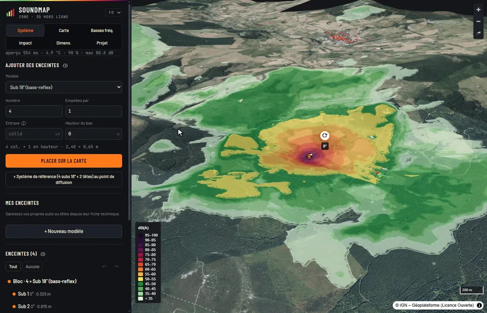
Prise en main
- Localiser la zoneBarre de recherche, en haut à gauche : commune ou adresse.
- Sélectionner un siteSélection de site → Rechercher des sites. Fiche 01
- Télécharger la zoneClic sur un site, puis Zone de travail : rayon, date de l'événement, Télécharger la zone. La simulation fonctionne ensuite hors ligne. Fiche 02
- Implanter le systèmeOuvrir en 3D, onglet Système : blocs de subs et de têtes, zone public. Fiche 04
- Calculer les basses fréquencesOnglet Basses fréq. → Lancer le calcul. Fiche 06
- Évaluer l'impactOnglet Impact → Évaluer l'impact (GFPE). Si la marge est insuffisante : orientation, montage des subs ou optimiseur (onglet Dimens.), puis nouveau calcul. Fiche 07
Projets
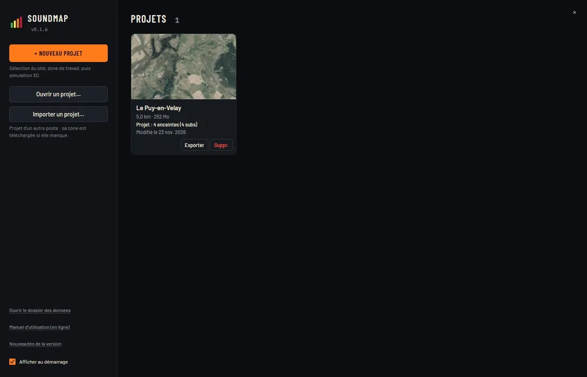
- Nouveau projet : étude de site depuis la vue France.
- Ouvrir un projet… : fichier
.smprojdont la zone est sur cet ordinateur. - Importer un projet… : projet d'un autre poste ; sa zone est préparée autour du système (5 km), téléchargée, puis le projet s'ouvre.
- Sur chaque carte : ouvrir (clic), Renommer, Exporter, Suppr. Une zone incomplète se reprend d'un clic.
Le logo et Mes projets ramènent à cet écran. Afficher au démarrage le masque au lancement.
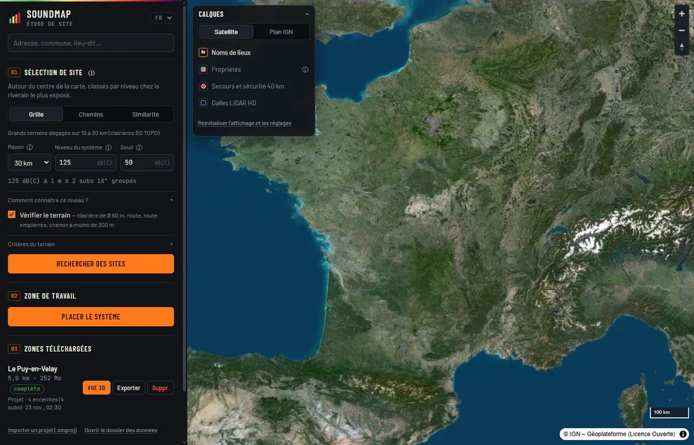
Vocabulaire
| dB(A) | Niveau pondéré selon l'oreille, peu sensible au grave. Utilisé pour la zone public et l'émergence. |
| dB(C) | Niveau qui conserve le grave. Indicateur principal chez les riverains. |
| Aperçu | Calcul instantané (méthode d'ingénierie), fiable près du système et dans l'aigu. |
| GFPE | Calcul de propagation du grave (25 à 200 Hz) sur le relief réel, avec la météo de la nuit. Détails |
| AROME | Modèle de prévision de Météo-France : vent et température en altitude. |
| Résiduel | Bruit de fond sans l'événement. Environ 25 dB(A) la nuit en zone rurale. |
| Émergence | Écart entre le niveau avec l'événement et le résiduel. +10 dB est perçu comme deux fois plus fort. |
| Médiane / P90 | Scénario météo typique / défavorable (dépassé une fois sur dix). |
| Isophones | Courbes d'égal niveau, tous les 5 dB. |
| Cardioïde / end-fire | Montages de subs (retard, polarité) qui réduisent l'émission vers l'arrière ou les côtés. |
| ZNIEFF | Zone naturelle d'intérêt écologique, faunistique et floristique. |
Sélection de site
Criblage autour du centre de la carte, ou du système s'il est placé. Seuls les terrains plats, dégagés et desservis sont retenus.
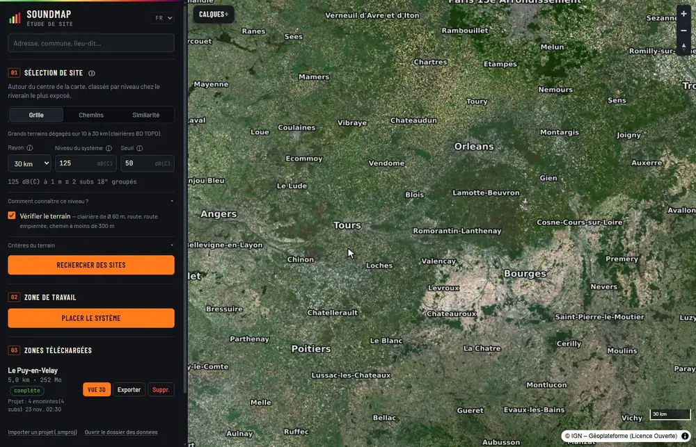
Méthode
| Grille | Grands terrains dégagés sur 10 à 30 km, clairières de la BD TOPO. |
| Chemins | Points tous les 150 m le long des chemins et en bout de chemin ; terrain dégagé et pente mesurés au LiDAR (2 m). Trouve les petites clairières et places de dépôt en forêt. 10 km au plus. |
| Similarité | Sites qui ressemblent à vos sites de référence : niveau chez le riverain, distance au premier habitant, pente, terrain dégagé, boisement, accès, bout de chemin, parcelle agricole. 10 km au plus. |
- Rayon
- Grille : 10, 20 ou 30 km. Chemins et Similarité : 3, 5 ou 10 km.
- Niveau du système
- Niveau continu dans le grave, en dB(C) à 1 m. Repères : 1 sub 18" ≈ 119 · 2 ≈ 125 · 4 ≈ 131 · 8 ≈ 137. Méthode d'estimation : Comment connaître ce niveau ? sous les champs.
- Seuil
- Niveau extérieur en façade au-delà duquel un habitant est compté exposé. 50 dB(C) par défaut.
- Vérifier le terrain
- Contrôle automatique sur les données IGN : clairière et voie d'accès.
- Critères du terrain
- Gabarit grande ou petite jauge, diamètre de la clairière (Ø 60 m), distance à la voie (300 m), types de voies, occupations exclues (bois, forêt ouverte, vignes, vergers, landes, parcelles agricoles déclarées au choix), déplacement permis (250 m). Les haies ne sont pas bloquantes. Petite jauge : Ø 24 m, voie à 100 m, 119 dB(C).
- Premier voisin à
- Les sites ayant une habitation plus proche passent en dernier. 500 m par défaut.
Résultats
Pour chaque site : niveau de nuit chez le riverain le plus exposé et sa distance (calcul GFPE, inversion de température), habitants exposés, pente, accès, boisement. Un clic place le système sur le site et ouvre la fiche de la parcelle.
| Niveau | Perception |
|---|---|
| < 50 dB(C) | À peine perceptible à l'intérieur. Seuil par défaut. |
| 50–60 dB(C) | Audible à l'intérieur, fenêtres fermées. |
| 60–70 dB(C) | Nettement audible toute la nuit. Plaintes probables. |
| > 70 dB(C) | Basses ressenties dans le bâti. |
Méthode Chemins
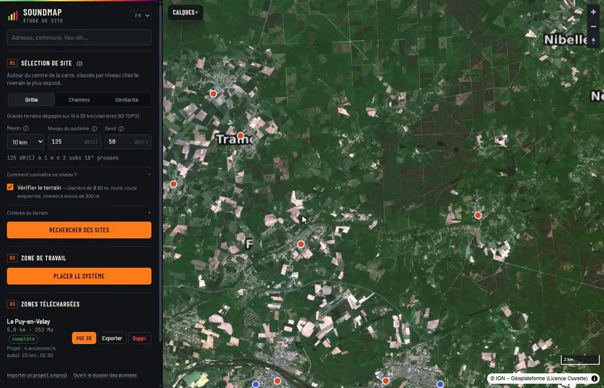
Sites de référence
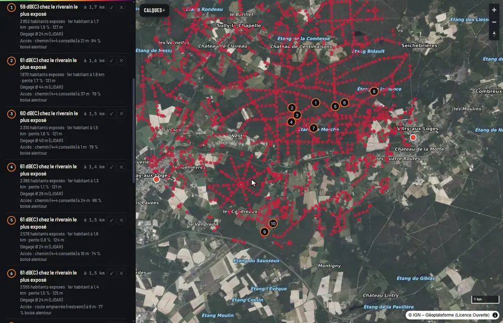
✓ (apprécié) ou ✕ (à éviter) sur un site proposé ou un emplacement évalué. Le site est analysé (quelques secondes) puis ajouté à la liste Sites de référence, utilisée par la méthode Similarité. Les sites notés restent sur cet ordinateur.
Évaluer un emplacement
Évaluer un emplacement, puis clic sur la carte. L'emplacement passe les mêmes critères ; le panneau indique la raison de son classement : pente, voisin trop proche, boisement, accès, ou emplacement situé entre deux points de la grille de 500 m.
Zone de travail
Téléchargement des données nécessaires au calcul, autour du point de diffusion.
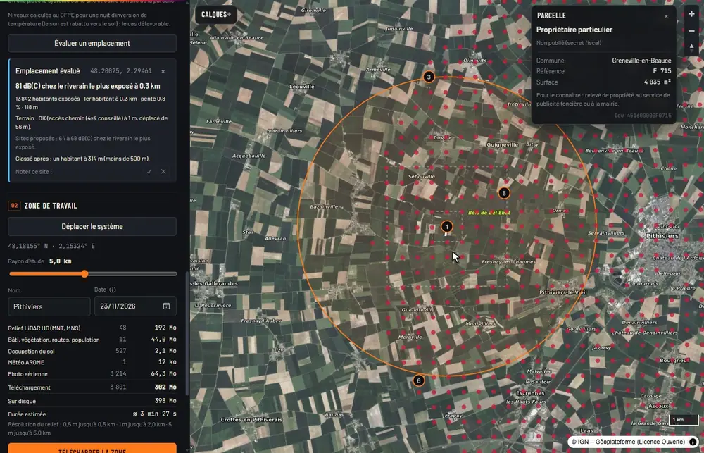
- Placer le système
- Placer le système (ou Déplacer le système), puis clic sur la carte. Un clic sur un site de la liste a le même effet.
- Rayon d'étude
- 1 à 10 km. Relief à 0,5 m jusqu'à 500 m, 1 m jusqu'à 2 km, 5 m au-delà.
- Nom et date
- La date de l'événement détermine la prévision météo AROME utilisée. Par défaut : aujourd'hui. Pour une date lointaine, retélécharger la météo quelques jours avant.
- Estimation
- Volume par catégorie, place sur le disque, durée. 5 km : 300 à 400 Mo, 3 à 4 minutes.
Une fois la zone téléchargée, la simulation fonctionne hors ligne. La recherche de sites, le sol et la végétation LiDAR (onglet Projet) nécessitent une connexion. Un téléchargement interrompu reprend avec Reprendre. Le projet apparaît ensuite sur l'écran d'accueil ; Ouvrir en 3D l'ouvre directement.
Calques
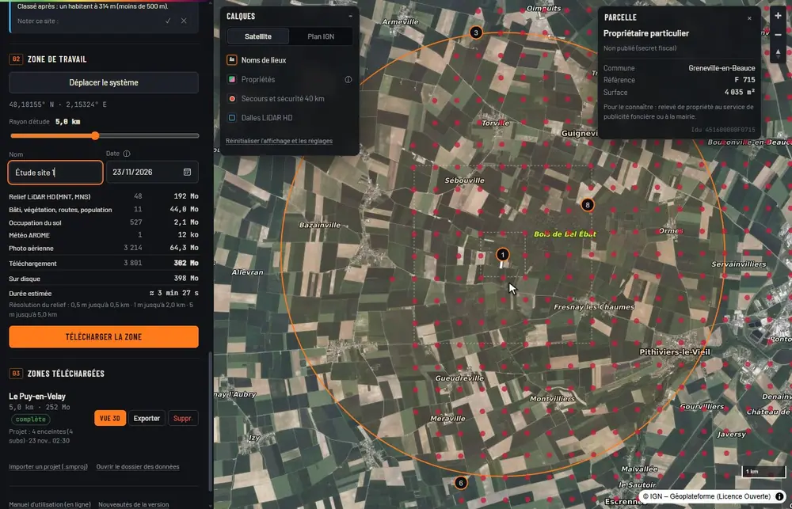
| Calque | Contenu |
|---|---|
| Satellite / Plan IGN | Fond de carte. |
| Noms de lieux | Communes, lieux-dits. |
| Propriétés | Parcelles colorées par type de propriétaire, pour identifier l'interlocuteur (commune, État, groupement, société…). Visible à zoom proche. Les particuliers ne sont pas publiés. |
| Secours et sécurité | Caserne de pompiers, hôpital, gendarmerie ou commissariat les plus proches (40 km, à vol d'oiseau), pour le dossier de sécurité. |
| Dalles LiDAR HD | Couverture du relief LiDAR de l'IGN. |
Réinitialiser l'affichage et les réglages rétablit les calques et les critères par défaut et revient à la vue initiale (système et résultats effacés ; zones et projets conservés).
Système
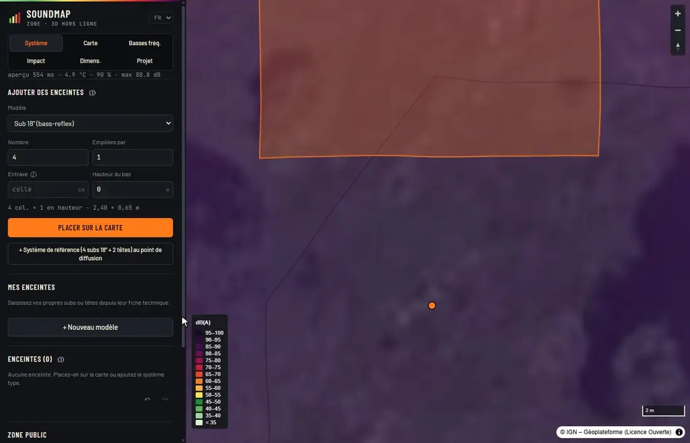
Ajouter des enceintes
- Modèle
- Modèles fournis (Sub 18", Sub 2×18", Top 15" + 2", line array…) ou modèles personnels.
- Nombre · Empilées par
- 8 et 2 : 4 colonnes de 2. Forme et encombrement affichés sous les champs.
- Entraxe
- Vide : boîtes jointives. Sinon, distance de centre à centre en cm.
- Hauteur du bas
- 0 m pour les subs, 2,1 m par défaut pour les têtes.
- Placer sur la carte
- Un clic par bloc, Échap pour terminer. Le bloc prend l'orientation du système ; la poignée ⟳ le fait pivoter.
- Système de référence
- 4 subs 18" et 2 têtes au point de diffusion.
- Mes enceintes
- + Nouveau modèle : saisie d'après la fiche technique (niveau max, bande passante, directivité, puissance).
Sélectionner et modifier
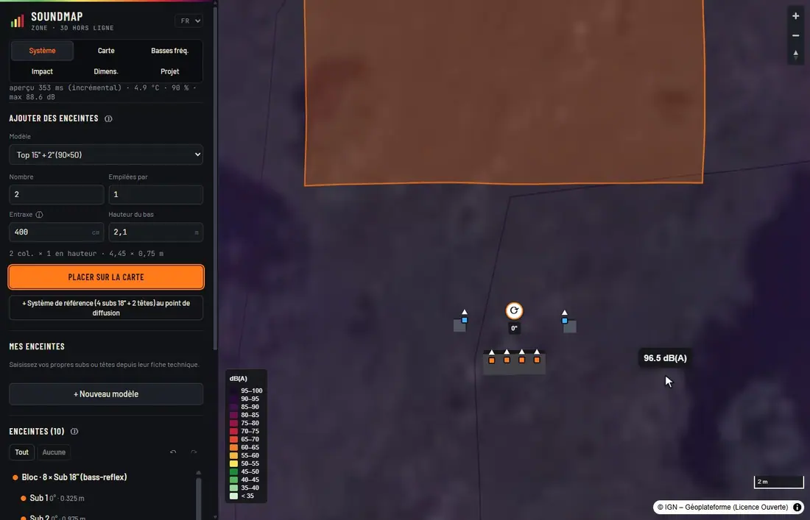
La liste Enceintes regroupe les boîtes par bloc. Pour un bloc : modèle, orientation, site (inclinaison), retard, gain, polarité, état. Pour une enceinte seule : les mêmes réglages et la hauteur. Grouper en bloc rassemble des enceintes posées séparément. Voir aussi les raccourcis.
Zone public
Polygone de la zone d'écoute : un clic par sommet, puis Terminer. Utilisé par le dimensionnement, l'optimiseur et le rapport.
Carte
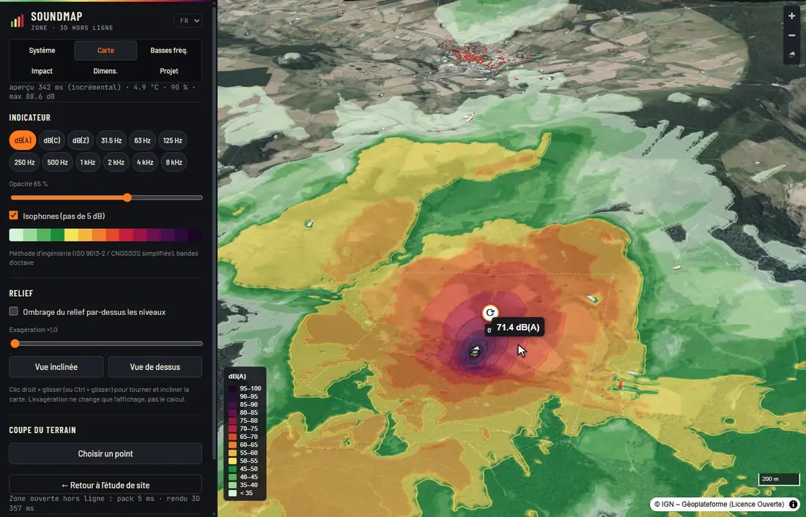
- Calcul affiché
- Aperçu rapide ou Basses fréq. (GFPE), dès qu'un calcul GFPE existe. Différence
- Indicateur
- dB(A), dB(C), dB(Z), ou bande d'octave de 31,5 Hz à 8 kHz.
- Variante
- En GFPE : médiane, P90, ou un scénario météo.
- Opacité · Isophones
- Transparence de la carte ; courbes tous les 5 dB.
L'échelle de couleurs dépend de l'indicateur : se reporter à la légende de la carte.
Relief
Ombrage par-dessus les niveaux, exagération ×1 à ×3 (affichage seulement), Vue inclinée / Vue de dessus. Clic droit + glisser (ou Ctrl + glisser) pour tourner la carte.
Coupe du terrain
Choisir un point, puis clic sur la carte : profil du sol entre le système et ce point, niveau reçu en dB(A) et dB(C), spectre par octave. Écouter ce point restitue une approximation du signal reçu.
Basses fréquences (GFPE)
Calcul de référence pour le grave, de 25 à 200 Hz : 360 directions, relief et sol réels, profil météo de la nuit. Sur carte graphique si disponible.
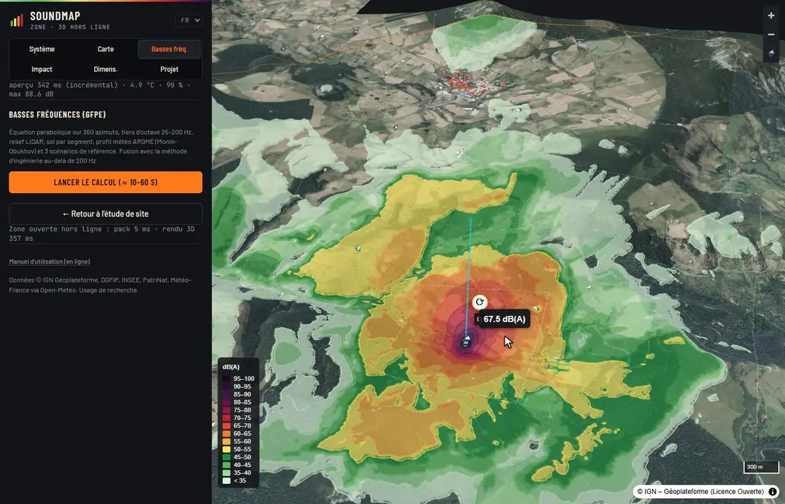
| Scénario | Objet |
|---|---|
| AROME | Prévision réelle pour la date et l'heure du projet. |
| Neutre, sans vent | Atmosphère homogène, référence. |
| Inversion forte | Nuit claire sans vent : cas défavorable usuel pour le grave. |
| Vent portant | Vent orienté vers l'habitation la plus exposée. |
| Lac d'air froid | Ajouté en fond de vallée. |
Pour chaque scénario : niveau maximal en dB(C) et surface au-dessus de 55 dB(C).
Toute modification des enceintes ou des réglages de propagation (programme, gain, hauteur des récepteurs, conditions, heure météo, sol) rend le calcul obsolète : la carte repasse sur l'aperçu et le bouton d'impact perd la mention « (GFPE) ». Les seuils, cibles et nom du projet sont sans effet.
Impact
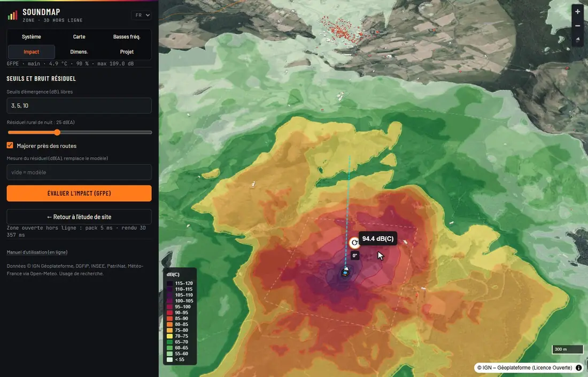
- Seuils d'émergence
- En dB, libres. Par défaut 3, 5 et 10. Aucune réglementation n'est appliquée : seuils à fixer selon le contexte.
- Résiduel rural de nuit
- 25 dB(A) par défaut. Majorer près des routes le relève le long des axes.
- Mesure du résiduel
- Valeur mesurée sur site ; remplace le modèle.
Évaluer l'impact utilise le GFPE lorsque le bouton affiche « (GFPE) ». Résultats :
- Marge, en émergence dB(A) : positive, tous les bâtiments sont sous le premier seuil ; négative, dépassement au bâtiment le plus exposé.
- Bâtiments et habitants par classe d'émergence.
- Bâtiment le plus exposé : niveau en façade, émergence par octave.
- Liste des plus exposés, avec « Ém. A » et « Ém. C » (émergence dans le grave).
- Lieux sensibles (écoles, établissements de santé) et ZNIEFF de la zone, avec le niveau reçu.
Dimensionnement
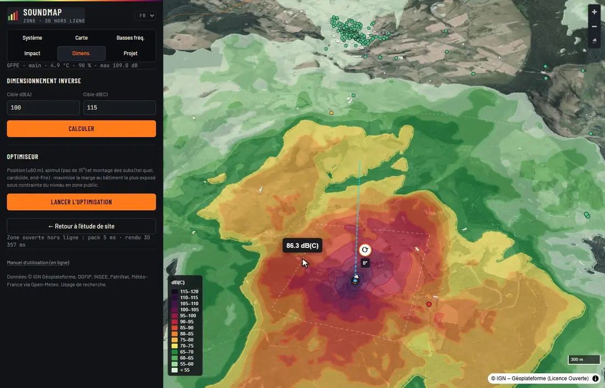
Dimensionnement inverse
Cibles au centre de la zone public, puis Calculer (zone public requise). Résultat : nombre de subs et de têtes nécessaires par rapport au système actuel, puissance d'amplification, homogénéité.
Optimiseur
Lancer l'optimisation : positions (±60 m), orientations (pas de 15°) et montages de subs (tel quel, cardioïde, end-fire). Critère : marge au bâtiment le plus exposé, à niveau constant en zone public. Chaque candidat s'applique d'un clic ; Ctrl+Z annule.
Projet
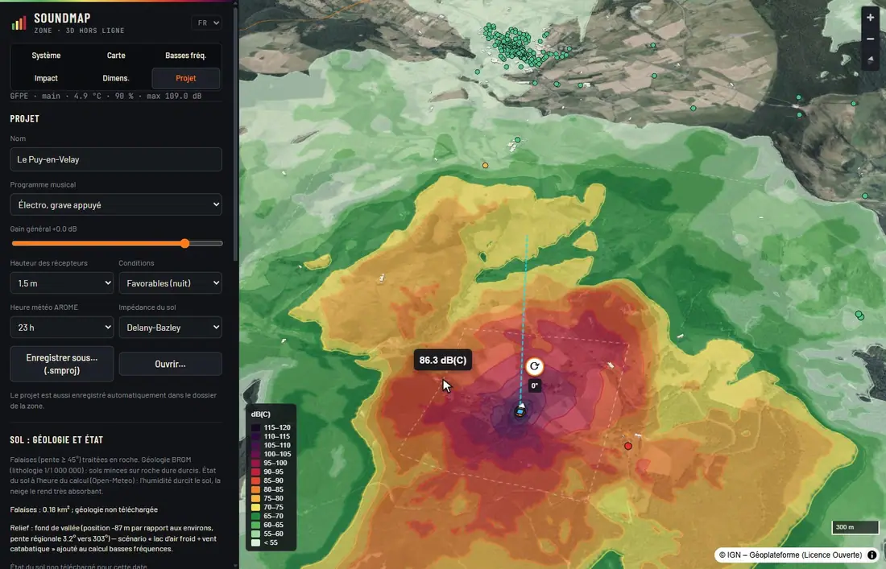
- Programme musical
- Spectre diffusé : électro (grave appuyé), techno, drum'n'bass, rock / live, bruit rose.
- Gain général
- Niveau de tout le système.
- Hauteur des récepteurs
- 1,5 m (rez-de-chaussée) ou 4 m (étage).
- Conditions
- Favorables (nuit) ou homogènes (jour).
- Heure météo · Impédance du sol
- Heure de la prévision AROME ; modèle de sol (Delany-Bazley, Miki).
- Sol
- Géologie BRGM, humidité ou neige à la date. Télécharger (connexion requise).
- Végétation LiDAR HD
- Rayon puis Télécharger (≈ 40 Mo par km²) : feuillage mesuré au lieu d'un forfait.
- Calage sur mesures
- Import CSV (lat, lon, LAeq / LCeq) ou GPX de sonomètre ; Appliquer au projet valide l'ajustement.
- Exports
- Rapport HTML (impression PDF), GeoTIFF, GeoJSON, pour l'indicateur affiché.
Enregistrer sous… / Ouvrir… : fichiers .smproj. Le projet est aussi enregistré automatiquement dans le dossier de la zone.
Aperçu ou GFPE
Une habitation hors de portée sur l'aperçu, derrière un relief ou à l'arrière du système, peut recevoir un niveau élevé dans le grave.
Aperçu
- ISO 9613-2 / CNOSSOS simplifiée, par octave.
- Atmosphère standard, courbure uniforme.
- Relief traité comme un écran.
- Instantané : implantation.
GFPE
- Propagation des ondes de 25 à 200 Hz.
- Relief, sol et profil météo réels.
- Diffraction et réfraction calculées.
- 10 à 60 s : décision.
- Subs omnidirectionnels. À 50 Hz, la longueur d'onde est d'environ 7 m : une ligne de subs émet autant vers l'arrière que vers l'avant, sauf montage cardioïde ou end-fire.
- Diffraction. Dans le grave, les ondes contournent buttes et talus. L'aperçu surestime l'atténuation.
- Inversion de température. De nuit, l'air plus chaud en altitude courbe le son vers le sol : il franchit le relief et porte loin, avec des zones de concentration. Un vent portant a le même effet.
Plus la fréquence est basse, plus la météo domine. Le feuillage est sans effet sous 200 Hz. En mode GFPE, la carte combine le GFPE jusqu'à 200 Hz et l'aperçu au-delà.
Classement des sites
- CriblageGrille de 500 m : relief à 100 m, population carroyée INSEE (200 m), écran du relief à 63 Hz. Terrains trop pentus écartés.
- TriSites sans habitation à moins de « Premier voisin à » d'abord, puis niveau chez le riverain le plus exposé (paliers de 3 dB), puis nombre d'habitants exposés pondéré par le dépassement.
- Vérification du terrainJusqu'à 80 candidats, dans l'ordre : clairière et accès. 20 sites retenus, espacés d'au moins 2 km.
- Contrôle de nuitGFPE (40 et 63 Hz, inversion, 180 directions) sur ces 20 sites, nouveau classement, 10 affichés.
Un emplacement situé entre deux points de la grille peut être évalué avec Évaluer un emplacement.
Fichiers et mises à jour
Ouvrir le dossier des données (sous la liste des zones, dès qu'une zone existe) ouvre ce dossier.
| Système | Dossier des données |
|---|---|
| Windows | %APPDATA%\fr.soundmap.viewer\ |
| macOS | ~/Library/Application Support/fr.soundmap.viewer/ |
| Élément | Contenu |
|---|---|
zones/<nom>-<id>/ | Zone téléchargée (200 à 500 Mo). |
zones/…/projet.smproj | Projet de la zone, enregistré automatiquement. |
speakers.json | Modèles d'enceintes personnels. |
references.json | Sites de référence notés. |
cache/ | Tuiles et cadastre consultés. Peut être vidé. |
Partager un projet
Exporter (carte du projet) ou Enregistrer sous… (onglet Projet) produit un .smproj. Sur un autre poste : Importer un projet… ; la zone est téléchargée si elle manque.
Mises à jour
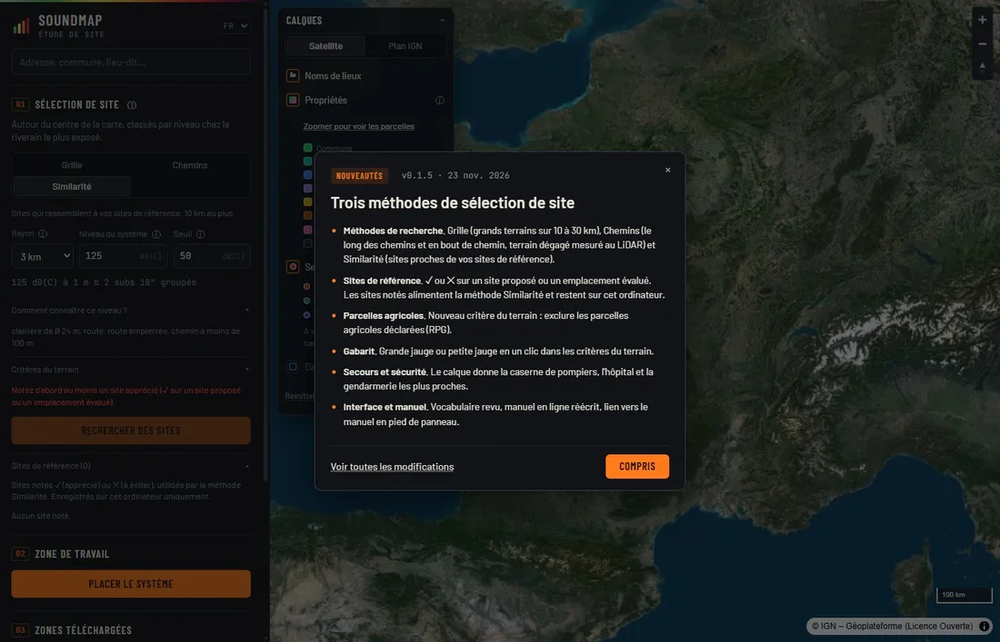
Vérification au lancement. Un bandeau propose la nouvelle version : téléchargement, installation et redémarrage en un clic. Zones et projets sont conservés. Au premier lancement d'une nouvelle version, une fenêtre résume les nouveautés ; elle reste accessible par Nouveautés de la version, en pied de panneau.
Raccourcis
Dans une zone ouverte, hors champ de saisie. Sur Mac, Ctrl = ⌘ (sauf rotation de la carte).
| Geste | Effet |
|---|---|
| Clic | Sélectionner une enceinte |
| Ctrl / Maj + clic | Ajouter ou retirer de la sélection |
| Double-clic | Sélectionner le bloc |
| Maj + glisser | Sélection par cadre |
| Glisser | Déplacer la sélection |
| Poignée ⟳ | Pivoter (Maj : pas de 15°) |
| ← → ↑ ↓ | 10 cm, dans le sens de l'écran |
| Maj + flèche | 1 m |
| Ctrl + flèche | 1 cm |
| Ctrl + Maj + flèche | 1 mm |
| Ctrl + A | Tout sélectionner |
| Ctrl + C / X / V | Copier / couper / coller sous la souris |
| Ctrl + D | Dupliquer |
| Suppr / ⌫ | Supprimer |
| Ctrl + Z | Annuler (100 étapes) |
| Ctrl + Y · Ctrl + Maj + Z | Rétablir |
| Échap | Désélectionner, terminer une pose |
| Clic droit + glisser | Tourner et incliner la carte (aussi Ctrl + glisser) |